class: middle, center # 基于差分演化算法的面波频散曲线反演 ## 报告人：潘磊 --- # 什么是面波？  ---   --- # 什么是频散曲线？ ## 2层模型(Aki)-解析解 $$ \tan \omega H \sqrt{\frac{1}{\beta_1^2} - \frac{1}{c^2}} = \frac{\beta_2^2}{\beta_1^2} \frac{\sqrt{\frac{1}{c^2} -\frac{1}{\beta_2^2}}} {\sqrt{\frac{1}{\beta_1^2} - \frac{1}{c^2}}} $$ $$ X = \frac{H}{\beta_1}\sqrt{1 - \frac{\beta_1^2}{c^2}} $$ $$ \tan \omega X = const. \frac{\sqrt{(const.)^2 - X^2}}{X} $$ ---   --- ## 4层模型-合成噪音数据-提取 <div class="2col"> 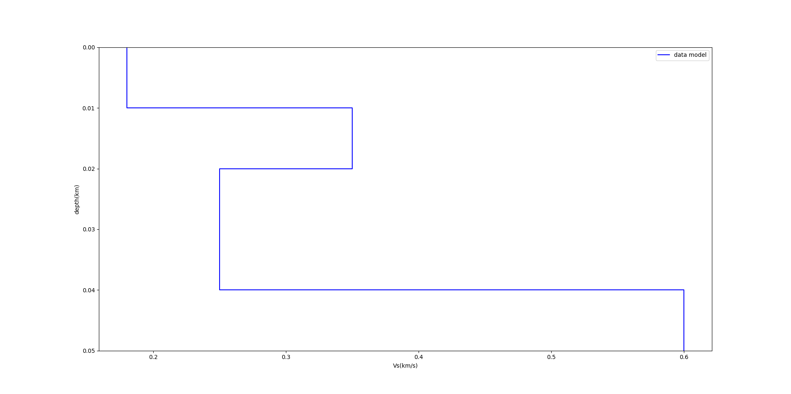 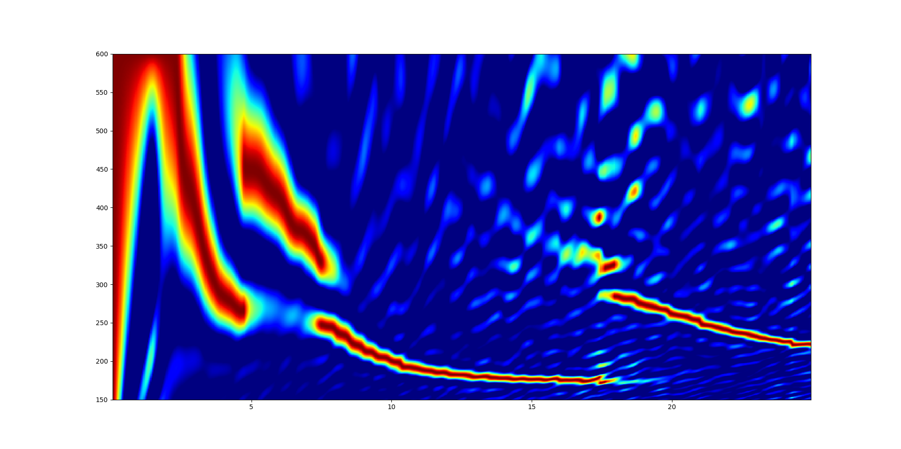 </div> --- ## 6层模型-合成噪音数据-提取 <div class="2col"> 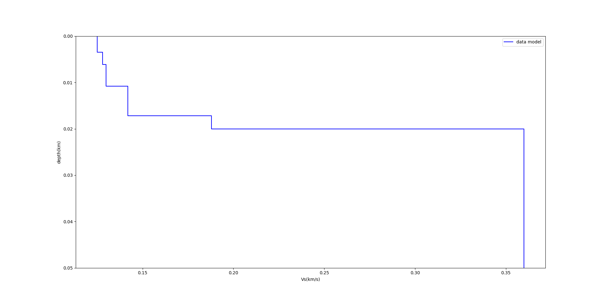 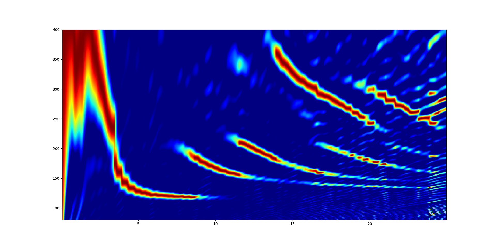 </div> --- ## 正演与反演 - 什么是正演？ 已知模型，通过数值计算得到需要的物理量。 - 什么是反演？ 已知物理量，通过某些反演方法得到模型。 --- ## 反演方法 - 基于导数的单点反演方法 - 最速下降(steepest descent) - 共轭梯度(conjugate gradient) - 拟牛顿方法(quasi-Newton) - 要求: - 目标函数必须二次可导 - 目标函数必须有唯一的最小值 --- ## 最速下降法  --- - 不基于导数的单点反演方法 - 暴力搜索(Brute Force Search) - 随机行走(Random Walk) - 模拟退火(Simulated Annealing) --- ## 暴力搜索和随机行走 <div class="2col"> 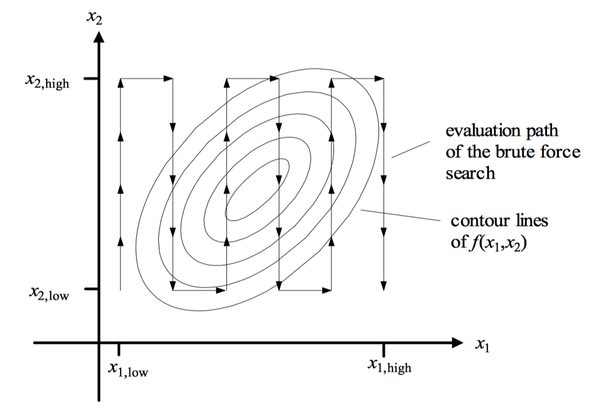 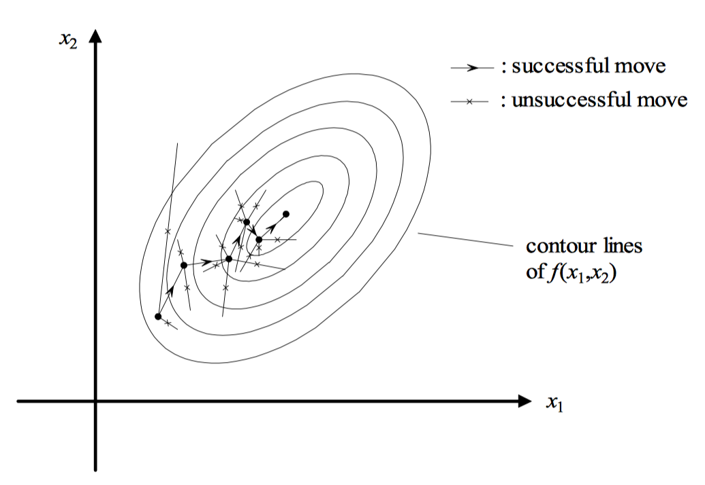 </div> --- - 不基于导数的多点反演方法 - 演化算法 多用于连续参数的最优化 - 遗传算法 适合离散可编码的参数的最优化 --- ## 差分演化算法 - Storn and Price, 1995 - 族群(Population) - 代(Generation) - 变异(Mutation) $$ \mathbf{v}\_{i, g} = \mathbf{x}\_{r0, g} + F \cdot (\mathbf{x}\_{r1, g} - \mathbf{x}\_{r2, g}) $$ --- ## 1.初始化族群  --- ## 2.产生扰动  --- ## 3.变异产生新个体  --- ## 4.挑选，接受新个体  --- ## 5.新一次变异产生新个体  --- ## 6.挑选，拒绝新个体  --- ## 高阶频散曲线对反演结果的影响 <div class="2col"> <figure> 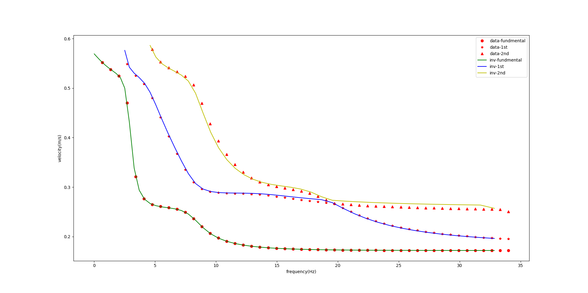 <figcaption>仅基阶参与反演</figcaption> </figure> <figure> 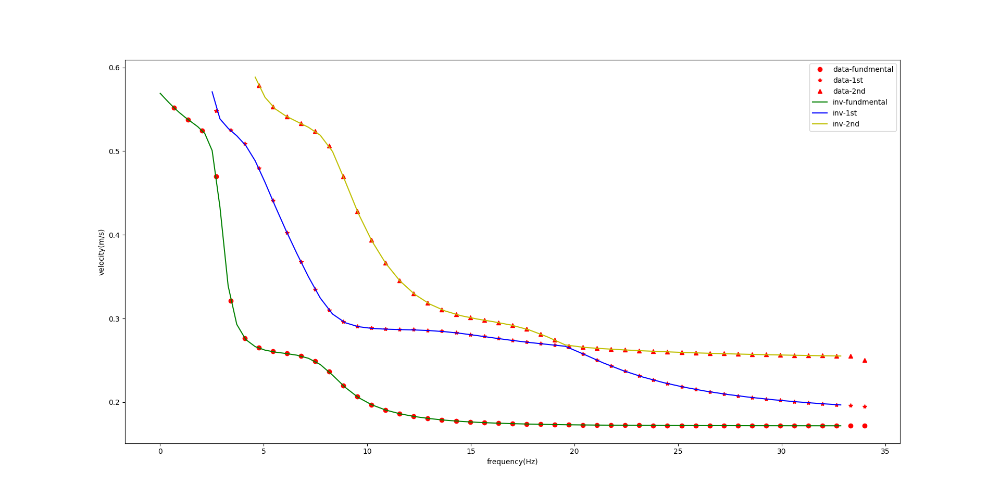 <figcaption>前3阶参与反演</figcaption> </figure> </div> --- <div class="2col"> <figure> 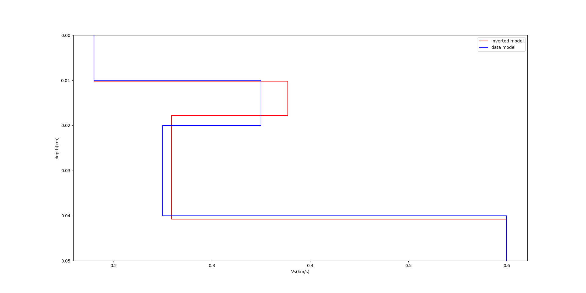 <figcaption>仅基阶参与反演</figcaption> </figure> <figure> 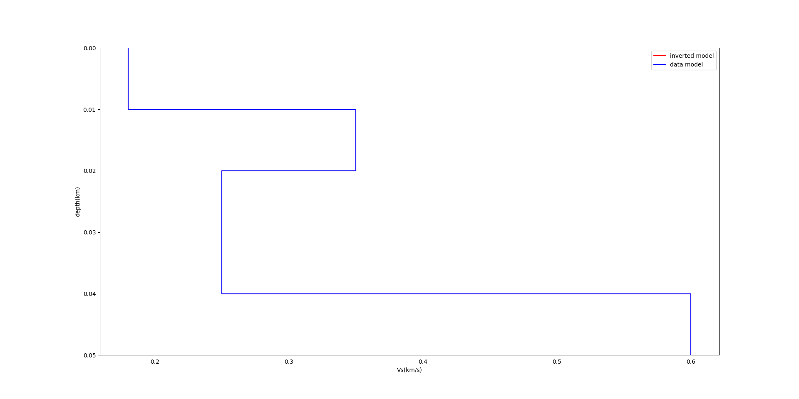 <figcaption>前3阶参与反演</figcaption> </figure> </div> --- ## 4层数据模型-8层反演模型-数据同一正演方法得到 <div class="3col"> <figure> 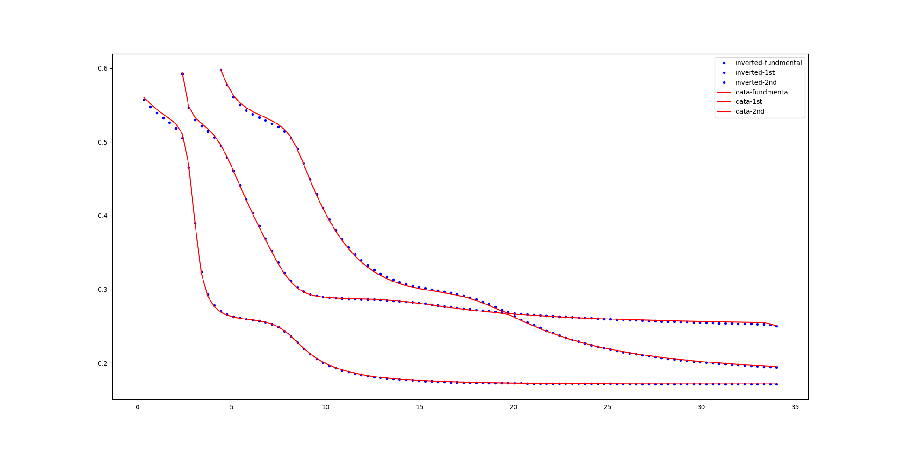 <figcaption>反演模型与数据模型对应的频散曲线的对比</figcaption> </figure> <figure> 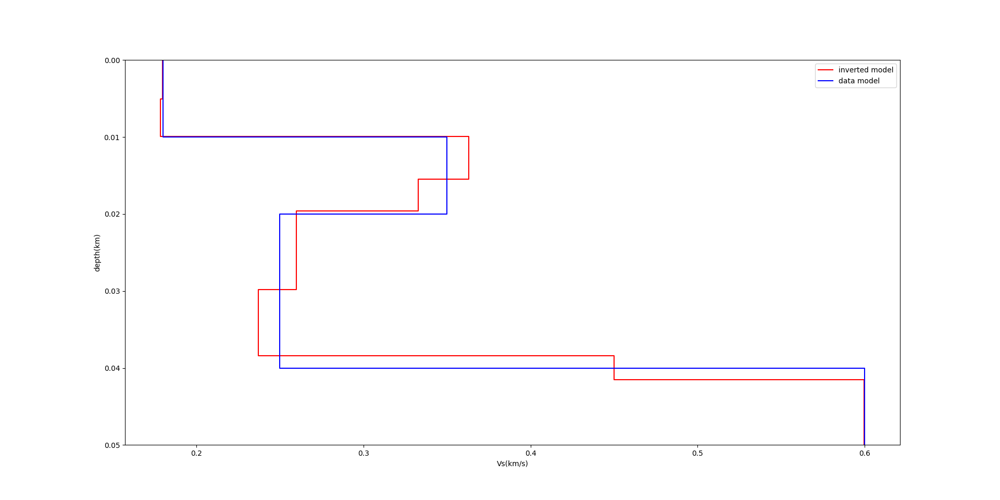 <figcaption>反演模型与数据模型的对比</figcaption> </figure> </div> --- ## 4层数据模型-4层反演模型-数据不同正演方法得到 <div class="3col"> <figure> <figcaption>从噪音数据中提取的频散曲线</figcaption> </figure> <figure> <figcaption>反演模型与数据模型对应的频散曲线的对比</figcaption> </figure> <figure> <figcaption>反演模型与数据模型的对比</figcaption> </figure> </div> --- ## 编程要求 - python